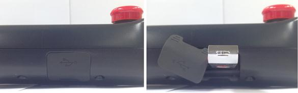
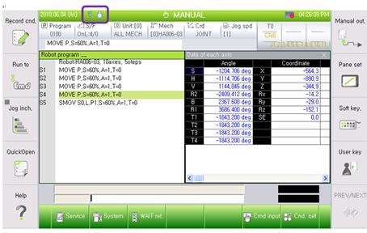
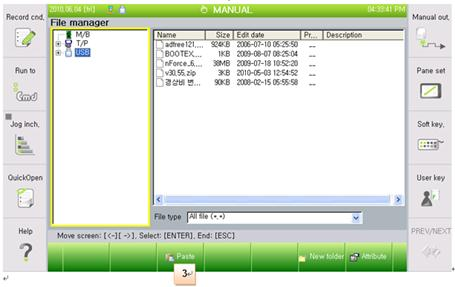
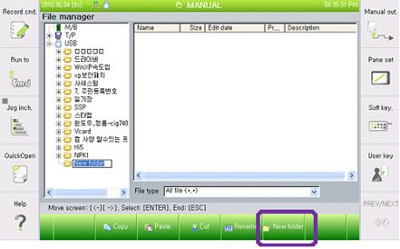
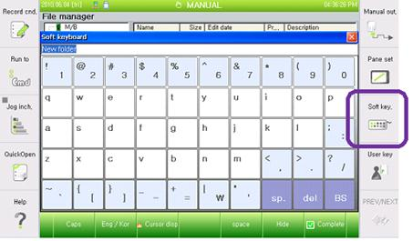
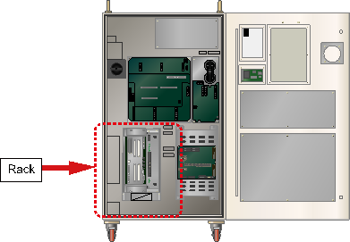

Warning
In order to protect the previous job programs, please back up all the files of Main board to the USB memory before you remove the board from the Rack.
1.1.17.1. Outline
This error occurs if the Servo motor does not turn on when the main send out the motor on command to the Servo. The cause might be a communication problem between the main and the Servo.
Main send Servo error clear command prior to sending motor on, and once the Servo error is cleared motor on command will be sent out. If the Servo error did not clear, the same error persists and motor on command will go out. In other words, if the communication between the main and the Servo does not have a problem, the motor on command will be received, or other Servo error will occur.
1.1.17.2. Causes and examine methods
|
(1) Please examine if the Main Board and the Servo Board are installed properly. n Examine if the board is installed properly. n Examine if board is faulty |
(1) Please examine if the Main Board and the Servo Board are installed properly.
This error may be caused by a communication problem if the Main Board and the Servo Board is not installed properly on a rack, or the board has an error.
|
Warning In order to protect the previous job programs, please back up all the files of Main board to the USB memory before you remove the board from the Rack. |
Method to back up the files from Main Board to USB memory is as below.

(a) TP520

(b) TP511
Figure 1.80 Methods for inserting a USB into the teach pendant
Once the USB is recognized by TP, the below icon will be displayed on a screen.

To back up the files enter to
Ø Service
Ø 5. File manager
And the screen that is similar to windows explorer will be displayed.

At this stage, please copy the files shown in M/B and move them to USB.


You may create a new folder on USB, or can rename the folder by using the soft keyboard just like the windows explorer.


n Examine if the board is installed properly
Please remove the Main Board and the Servo Board from the Rack and re-install them again.

(a) Hi5a-S controller

(a) Hi5a-S controller
Figure 1.81 Location of Rack Inside of the Controller
n Examine if the board is faulty.
To examine if the board is faulty, please replace it with new one.